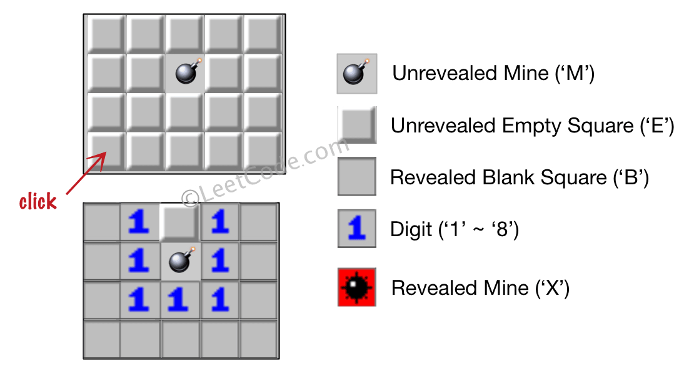
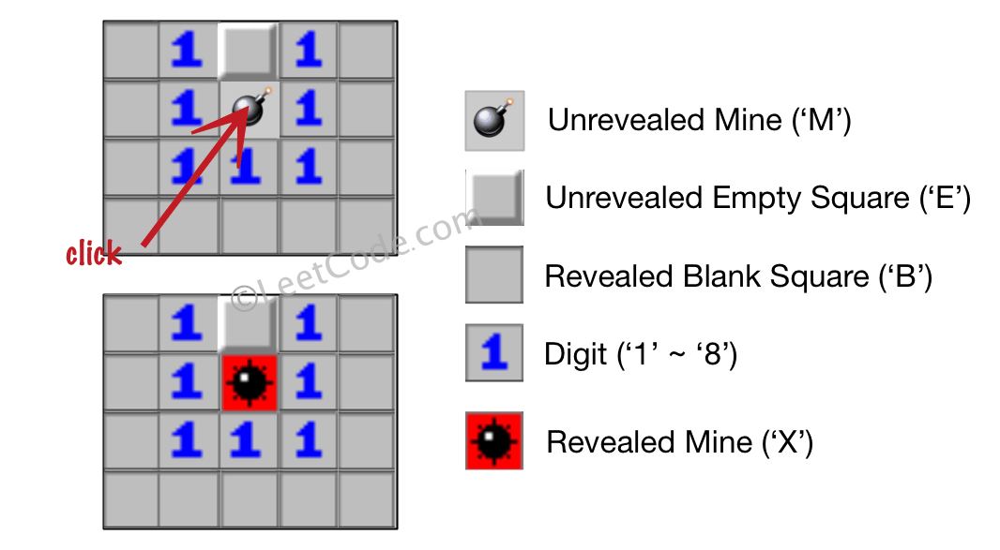

529. 扫雷游戏
从点击处 BFS：点雷改 X 结束；空格数 8 邻雷，有雷标数字停下，没雷标 B 并把 8 邻居入队继续扩散。
思路
- 点击是
'M'：改成'X'直接返回；点击是'E'：从它开始 BFS。 - 出队一格先数 8 邻域里的
'M'：有雷 → 改成对应数字'0'+雷数，停止扩散；没雷 → 改成'B'，把 8 邻域里还是'E'的入队。 - 同一格可能被多个邻居重复入队，出队时判
!= 'E'跳过即可（或入队时就标已访问）。 - BFS/DFS 都行，最终盘面与扩散顺序无关；数字格不会把雷"揭"出来，雷只有被点击才变 X。
图解
最优解
1import java.util.*;2 3class Solution {4 public char[][] updateBoard(char[][] board, int[] click) {5 int r = click[0], c = click[1];6 // 8 个方向的偏移7 int[][] dirs = {{-1, -1}, {-1, 0}, {-1, 1}, {0, -1}, {0, 1}, {1, -1}, {1, 0}, {1, 1}};8 if (board[r][c] == 'M') {9 // 点中地雷：游戏直接结束10 board[r][c] = 'X';11 } else {12 Deque<int[]> queue = new ArrayDeque<>();13 queue.add(new int[]{r, c});14 while (!queue.isEmpty()) {15 int[] cur = queue.poll();16 int i = cur[0], j = cur[1];17 // 同一格可能被多个邻居重复入队，出队时再查一次18 if (board[i][j] != 'E') continue;19 int mines = 0;20 for (int[] d : dirs) {21 int x = i + d[0], y = j + d[1];22 if (x >= 0 && x < board.length && y >= 0 && y < board[0].length && board[x][y] == 'M') mines++;23 }24 if (mines > 0) {25 // 邻居有雷：只标数字，不再扩散26 board[i][j] = (char) ('0' + mines);27 } else {28 // 周围干净：翻成 B，把还没揭开的邻居都排进队列29 board[i][j] = 'B';30 for (int[] d : dirs) {31 int x = i + d[0], y = j + d[1];32 if (x >= 0 && x < board.length && y >= 0 && y < board[0].length && board[x][y] == 'E') {33 queue.add(new int[]{x, y});34 }35 }36 }37 }38 }39 return board;40 }41}题目
让我们一起来玩扫雷游戏！
给你一个大小为 m x n 二维字符矩阵 board ，表示扫雷游戏的盘面，其中：
'M'代表一个 未挖出的 地雷，'E'代表一个 未挖出的 空方块，'B'代表没有相邻（上，下，左，右，和所有4个对角线）地雷的 已挖出的 空白方块，- 数字（
'1'到'8'）表示有多少地雷与这块 已挖出的 方块相邻， 'X'则表示一个 已挖出的 地雷。
给你一个整数数组 click ，其中 click = [clickr, clickc] 表示在所有 未挖出的 方块（'M' 或者 'E'）中的下一个点击位置（clickr 是行下标，clickc 是列下标）。
根据以下规则，返回相应位置被点击后对应的盘面：
- 如果一个地雷（
'M'）被挖出，游戏就结束了- 把它改为'X'。 - 如果一个 没有相邻地雷 的空方块（
'E'）被挖出，修改它为（'B'），并且所有和其相邻的 未挖出 方块都应该被递归地揭露。 - 如果一个 至少与一个地雷相邻 的空方块（
'E'）被挖出，修改它为数字（'1'到'8'），表示相邻地雷的数量。 - 如果在此次点击中，若无更多方块可被揭露，则返回盘面。
示例 1：

输入：board = [["E","E","E","E","E"],["E","E","M","E","E"],["E","E","E","E","E"],["E","E","E","E","E"]], click = [3,0] 输出：[["B","1","E","1","B"],["B","1","M","1","B"],["B","1","1","1","B"],["B","B","B","B","B"]]
示例 2：

输入：board = [["B","1","E","1","B"],["B","1","M","1","B"],["B","1","1","1","B"],["B","B","B","B","B"]], click = [1,2] 输出：[["B","1","E","1","B"],["B","1","X","1","B"],["B","1","1","1","B"],["B","B","B","B","B"]]
提示：
m == board.lengthn == board[i].length1 <= m, n <= 50board[i][j]为'M'、'E'、'B'或数字'1'到'8'中的一个click.length == 20 <= clickr < m0 <= clickc < nboard[clickr][clickc]为'M'或'E'
题面取自力扣当前版本。
数据快照 2026-11-04。题面版权归力扣所有，本站点仅供本人学习使用，请勿对外发布。